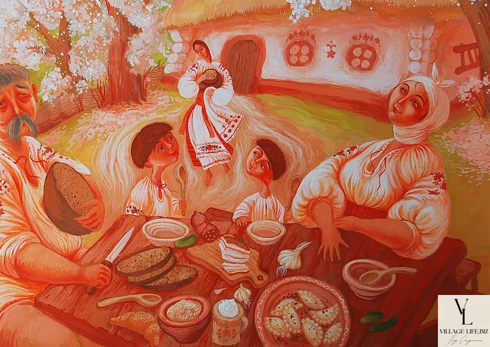
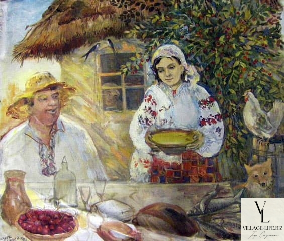

Each folk cuisine is primarily influenced by the design of the place where food is cooked, i.e. the home hearth. The Ukrainians had such a place as “varista pich”, a closed fireplace. Therefore, Ukrainian cuisine mainly uses the techniques of boiling, stewing and baking. Even Zaporozhian Cossacks, having shot a game, tried to boil it into yushka (broth), and not roast it on a spit, which is more typical for Germans, for example. In addition, Ukrainian cuisine also adopted some technological techniques from the kitchens of neighbors, in particular, frying products in hot oil (smazhennya), which is inherent in Tatar and Turkish cuisine. Ground meat (“sicheniki”) was borrowed from German cuisine, and the use of paprika, for example, from Hungarian cuisine. The geographical and climatic conditions of the Ukrainian people were so diverse that they were able to eat both crop and livestock products. Cattle breeding, hunting and fishing made the menu very diverse, although even before the beginning of the XIX century meat dishes were considered festive by the people.
The Middle Ages Already during the Trypillian culture period (5-6 thousand years ago), which was adopted by the Eastern Slavs, the population of present-day Right-Bank Ukraine grew cereal crops such as wheat, barley, and millet. As archaeological excavations show, the people living in those distant times, thanks to geographical conditions, had the opportunity to consume both plant-based and meat-based foods. Alongside agriculture, the East Slavic tribes raised large and small cattle, pigs, and also engaged in hunting and fishing. In subsequent times, agriculture and animal husbandry expanded even more, especially in the territory that now constitutes modern Ukraine. During the time of Kievan Rus, chronicles mention certain types of dishes: yukha (fish and meat broths resembling a soup), varyvo iz zil'lyam (liquid food with aromatic herbs and vegetables). In this early period of Ukrainian cuisine formation, there was a tendency to consume hot liquid dishes ("khlyobova"), primarily based on plant ingredients. Everyday foods included various porridges, steamed vegetables (especially rutabaga), borshch or cabbage with peas. Porridge was not reheated but was preferred to be served with boiled milk. In the 11th–12th centuries, buckwheat was brought from Byzantium or the Caucasus, though it did not spread significantly. Bread was made from rye and wheat flour using a sourdough starter (sour bread) and baked in ovens. Grain was ground into flour using manual millstones, and later — water mills and windmills. The dough was mixed in a wooden tub with leftover dough from previous baking, initially stirred with a wooden pestle, and later with hands as flour was added and the dough began to rise. The dough was left to rise for several hours in a warm place before being placed in the oven, on oak or cabbage leaves, without a form. There are also many records from the times of Rus mentioning yeast bread with hops. When preparing rye or rye-barley dough, rye malt flour was often added, made from sprouted, then dried and roasted rye or barley. The cultivation of wheat was also practiced in Rus, as noted by Ukrainian archaeologist V. Dovzhenyuk. However, wheat bread was a privilege of the wealthier population. Bread was baked by women, and less frequently by young girls, once a week, most often on Saturdays. The process of baking bread was surrounded by numerous prohibitions and rules — bread could not be baked on Fridays, oven doors could not be left open while putting the bread in, and the dough could not be touched by an "unclean" woman. In the 1240 chronicle, it is noted that bread was baked with honey in the Kyiv Pechersk Lavra. Legumes — peas, beans, and lentils — played a significant role in the diet. Dishes made from peas were popular among the common folk, particularly during fasting. Beans formed an essential part of princely feasts and monastic meals. The first mentions of cucumbers appear in the 9th-century Kyiv chronicles. The "Izbornik of Sviatoslav" mentions beets. Mushrooms, wild fruits and berries such as hawthorn, blackberry, raspberry, bilberry, strawberry, apples (sour varieties), pears (wild varieties), cherries, peaches, barberries, water nuts, horseradish, wild carrots, parsnips, chicory, caraway seeds, sorrel, lamb's-quarters, nettles, sage, thyme, cornflower, mint, chamomile, and cloves were harvested. Mushrooms were commonly consumed as they were a good source of protein during fasting. White mushrooms, saffron milk caps, Polish mushrooms, and honey mushrooms were mainly dried for storage, while others were salted in barrels. During festive occasions, holubtsi (stuffed cabbage rolls) and stuffed intestines, roast meats from domestic animals (pigs, sheep, goats, and less often calves), wild animals (hares, wild boars, deer, moose, aurochs, roe deer, bison), and wild birds (partridges, capercaillies, woodcocks, geese, pigeons, swans) were served. Wild game is also mentioned during descriptions of princely banquets. It was common to consume crane meat, especially roasted crane. Fish was also eaten (carp, bream, sturgeon, catfish, eel, tench, pike, chub), as well as fish roe. For long-term storage, it was common to prepare prosul (salted fish in barrels) and sushch (dried and smoked fish). Roe from various fish species was also consumed. Dairy products included cheese from cow and sheep milk, sour cream (which was sometimes processed into butter), and fermented milk drinks like kyslyak (sour milk) and ryazhenka (baked milk). Milk was also consumed either raw or boiled. Various sweets were made from sweet vegetables, fruits, and berries, such as babky (a type of dessert), kutiya (wheat or rice mixed with honey, poppy seeds, nuts), yukha made from dried apples, plums, and cherries (later known as uzvar), as well as uzvarets from raspberries and cranberries, kisel (fruit or berry-based jelly), and kvasy (fermented beverages). Numerous alcoholic drinks appeared, including various types of med (mead), popular with the addition of pale iris root, beer, zbytnya (a fermented drink), and wine made from grapes. Local spices such as horseradish, onions, garlic, dill, anise, mint were used as seasonings, along with imported spices such as saffron, cinnamon, nutmeg, cloves, cardamom, ginger, and pepper. Animal fats, various oils, vinegar, and nuts were used for cooking. Due to the absence of sugar, honey played a significant role in the diet. Fruits and berries such as apples, cherries, plums, currants, raspberries, and cranberries were consumed. Food preparation, as a particular craft, became a specialized profession at princely courts and monasteries. Already in the 11th century, there were several cooks at the Kyiv-Pechersk Lavra among the monks. Cooks were also present in wealthy families.
The Polish-Lithuanian period was characterized by the diversification of the menu and the emergence of many dishes that later became classic. By the 14th century, the transformation of first courses was complete: yukha became yushka, and varyvo iz zil'lyam transformed into borshch (with the addition of white and green borshch varieties), khlyaky (dumplings) and kapusnyaky (cabbage soups) became widespread. Oil made from rapeseed, flax, and hemp began to be used more actively. Bread was eaten with every dish, even dessert, including kvashe (fermented rye bread). Bread was always treated with reverence, and foreign travelers noted the importance of bread in Ukrainian culture, particularly the tradition of greeting guests with bread and salt and serving bread at the most exquisite banquets. In the 15th–17th centuries, groats and flour from buckwheat were introduced into the diet. The population began to eat hrechanyky (buckwheat fritters), hrechani pampushky (buckwheat dumplings with garlic), vareniky (dumplings) with buckwheat and cheese, buckwheat porridges, babky, lemishka, and kvashe. During this period, the Turkish dish dyush-vare (dumplings) transformed into Ukrainian vareniki, which eventually gained national fillings such as cherries, cheese, onions, and cracklings. The vegetable dish taratuta became popular. In the 15th century, horilka (vodka) appeared (typically 20–28 degrees). With its introduction came the production of various tinctures and liqueurs, known for their refined taste and beautiful colors, as well as varenukha (a fermented drink). It was also during this time that hams were first mentioned. In the 16th century, sweet and bitter peppers, cardamom, and cinnamon were introduced. In the 17th century, Cossacks brought mulberries, watermelons, spinach, and corn from Astrakhan, while aubergines, which were used in Turkish cuisine and grew well in southern Ukraine, were initially avoided as a "foreign" vegetable. Strawberries and wild strawberries began to be cultivated, expanding the variety of Ukrainian dishes. Pavlo of Aleppo, who accompanied the Patriarch of Antioch Macarius on a trip to the Polish-Lithuanian Commonwealth in the 17th century, describes the diet of monks, Ukrainian nobility, and Cossacks. He primarily mentions boiled and stewed dishes — yushky (soups), porridges, and sauces. Meat dishes were mostly boiled, but for large banquets, meat was roasted on spits. It was cooked over open fires. Whole bulls, domestic and wild boars were roasted, while smaller banquets featured roasted hares, chickens, and geese. Ukrainian Cossacks started to popularize the consumption of pork fat in the 16th–17th centuries. Blood sausages, known as krovyanka, made from the blood of slaughtered animals, became characteristic of Ukrainian cuisine. Due to the high cost of spices, like vinegar and salt, from the 17th century, these were not typically used during cooking but were placed on the table for guests to add according to their preferences.
Technologies
Since the 8th century, clay stoves with a bell-shaped design that were fired with a "black" method (without a chimney) became widely used. The history of the Ukrainian stove dates back to ancient times and originated as a "closed-type hearth" — the varystu stove. With this method of heat treatment, the food retained its most beneficial properties. The thick walls of the stove held heat for a long time, allowing the food to cook slowly and evenly, as the heat was distributed from all sides. This process ensured that the dishes were cooked thoroughly. The chumaky (salt traders) and Zaporizhian Cossacks would make temporary kabytse stoves in the ground during their expeditions. During the time of Kievan Rus, common kitchen tools included harnytsi (pots), kotly (cauldrons), skovrady (frying pans), and vertyly (spits). Cooking methods included varyennya (boiling), pryazhennya (frying in hot fat), and zahar (frying on a pan). The Zaporizhian Cossacks cooked food in large copper cauldrons, suspended by hooks over fires placed under chimneys in the entryways of each kurin (Cossack hut). In the absence of metal cauldrons or clay pots, the Cossacks ingeniously boiled food in wooden scoops, tossing hot stones into them one by one until the water boiled and the dish was ready. Folk experience led to the use of decreasing temperature from the fire, as opposed to the increasing temperature method used today. When food needed to be heated faster, the pot was placed on burning firewood. Once the water reached a boil, the firewood would have burned down, leaving the embers to provide heat. The temperature could be easily controlled by redistributing the coals. Dishes would take a little longer to prepare, but they became more intense in flavor. Therefore, in ancient Ukrainian cuisine, there were few dishes that were prepared quickly. These included pryazhene sausages, fish or egg dishes, mlynci (pancakes), lasyuny (sweet pastries), vareniki (dumplings), and halushky (dumplings). For a long time, sugar was obtained from plant juices (from maple, birch, or beetroot) by boiling the juice down and drying it. Only in the 16th century did sugar from sugar cane appear in Ukraine. From the 17th century, distillation devices such as alembics (possibly named after the Lviv apothecary Ludwig Alembek) began to be widely used. The braga (mash) for making vodka was prepared from sprouted grains, such as barley, wheat, and rye. Spices or fruits were added to mask the unpleasant taste of fusel oil. Vodka was distilled in large cauldrons with outlet pipes.
Consumption
In rural areas, people ate five times a day: breakfast was at 6–7 a.m., lunch at 11 a.m.–12 p.m., a light meal at 2–3 p.m., supper at 6–7 p.m., and dinner at 10–11 p.m.
The New Era
At the end of the 17th and the beginning of the 18th century, a distinction began to emerge between the cuisine of the ruling classes (urban) and that of the common people. According to the account of the traveler Pavel Aleppsky, the banquet of Bohdan Khmelnytsky was quite simple, not much different from that of a wealthy Cossack. However, from the time of Hetman Ivan Bryukhovetsky, feasts and banquets became more lavish, as they began to serve as a means of asserting power in the eyes of foreign diplomats visiting Ukraine. The cuisine of the nobility and gentry gradually lost its distinctly Ukrainian character, incorporating dishes from Italian, French, and German kitchens. This process accelerated during the reign of the Russian Emperor Peter I. One of the new customs among the nobility was the consumption of appetizers as a separate course. German-style buterbrody (open-faced sandwiches), French and Dutch cheeses were combined with traditional Ukrainian dishes such as cold salted meats, kholodets (meat jelly), okist (smoked ham), and buzhyna (roast pork). The nobility, Cossack elite, higher officials, and clergy also consumed various fish imported from the Baltic and Mediterranean Seas, including oseliedets (herring) and syomga (salmon), as well as kav'yar (salted caviar with spices). Documents from the 18th century mention that in Nizhyn, it was possible to be served karakatytsia (octopus), and in a 1737 report, the leaders of the Kyiv-Pechersk Monastery bought 10 octopuses for Easter. The majority of the population consumed fish from Ukrainian rivers. Osetryna (sturgeon) was considered a common food in those times. Dried fish (balyky) was widely consumed, and from the 1730s, the practice of pickling fish spread. From the 19th century, wealthy and middle classes increasingly consumed local utrytsia (sea mussels) and midiї (mussels). Thanks to the policies of the imperial government, the consumption of tea became widespread among the gentry (though it was quite expensive due to a state monopoly), replacing the coffee tradition that was common during the time of the Commonwealth of Poland-Lithuania and at the beginning of the Cossack Hetmanate. In the higher social strata, sweet pies, pyrizhyky (small pies), and sweets were separated from the main meal, becoming a distinct course served with tea around 5 p.m. In the 19th century, urban dwellers adopted the practice of eating salads. Alcoholic beverages were abundant at banquets. Mead, beer, and homemade wines were especially popular among the Cossack elite. Imported wines from Hungary and France, such as sekty (champagne), malvaziya, and romania, were also enjoyed. In the 18th century, potatoes were introduced to Ukraine, quickly becoming the staple food of the population. Tomatoes, sunflowers (from which sunflower oil was extracted and used in many dishes), and mustard (for making oil and seasoning meat dishes) also made their way into the cuisine. Cane sugar was imported in large quantities but was expensive. The appearance of sugar beets in Ukraine in the 19th century and the local production of sugar significantly enriched the national cuisine. At the same time, the continental blockade imposed by Napoleon I hindered the import of cane sugar and promoted the development of beet sugar production. A large number of flour-based dishes made from unleavened dough continued to be popular. Yeast dough was only used for making palyanytsia (round bread), pampushky (small fluffy breads), kalynnyky (fruit-filled pastries), and bubliky (bagels). There were 80 types of sweet treats, including beshkoti (biscuits), mokorony (almond meringues), wafoly (wafers), and pranyky miedovi (honey gingerbread). Among the grains, millet, rice, and buckwheat were most popular. In the second half of the 19th century, as the peasantry grew poorer, other types of flour began to be mixed with rye flour. In Poltava and Slobozhanshchyna, buckwheat flour was mixed in, while in Polissya, potato flour was added, and in Western Ukraine, barley, corn, and oat flours were used. At the beginning of the 20th century, tomatoes, tomato juice, or tomato sauce began to be added to borsch (beet soup). The green (sorrel) borsch became widespread. The second most popular vegetable soup became kapusnyak (cabbage soup), which was now often made with meat, mostly fatty pork. In Ukrainian cuisine, rosolnyk (pickle soup) also emerged, which was typically prepared by urban dwellers. Vegetables (beets, legumes, carrots, pumpkins, corn, potatoes, and tomatoes) were eaten as side dishes with fatty meat or served as independent dishes, often accompanied by salo (pork fat).
Technologies
At the beginning of the 19th century, a stove appeared in Ukrainian cuisine, which led to the need to borrow new technological techniques and dishes from Western European kitchens, particularly from the German one — the grinding of food products, reflected in various Ukrainian sichenyky (minced meat cutlets). In the second half of the 19th century, large restaurants began opening in big cities, where they hired French chefs who brought with them recipes and cooking technologies for Western European dishes, often making arbitrary changes to the preparation methods of Ukrainian dishes. This led to the fact that many Ukrainian dishes were forgotten.
Consumption
During the times of the Cossack Hetmanate, dining and banquet tables were covered with white linen tablecloths, woven along the edges with red cotton threads. On these tables, silver and copper, richly decorated shandaly (candlesticks) were placed. For aesthetic pleasure, korablyky (small boats) were sometimes placed on the banquet tables to hold salt or spices. Spoons were used for eating. The food was served pre-cut into pieces, and people would take it from the communal dish with their hands. For daily use, both the Hetman and ordinary Ukrainians used wooden and clay tableware. At festive occasions, before food was served to the Hetman’s table, strong alcohol was traditionally offered in silver bratynas, silver, pewter, and glass chvertinas, suliyas, and shtofs. Then, yushka (soup) was brought to the table. According to the description of I. Samoylovych’s belongings, we encounter dishes used for liquid foods. The yushka was served hot in copper frying pans or in dishes placed on hot frying pans. Then, porridges were served. After that came the meat dishes. Fruits and berries, particularly oranges and lemons, were served next. The meal concluded with numerous sweets. In the 19th century, the formation of the general urban cuisine was completed. Workers in the cities began eating three times a day, and later switched to only two meals: breakfast at dawn, and either lunch or dinner when they returned home. At work, they would only have a poldnuvannya (midday meal), which consisted of cold food.
Soviet Period
In the early years, vermicelli and pasta appeared, while the consumption of pies, pancakes, and porridge declined. However, the first liquid dishes retained their importance. Vegetable salads became increasingly common. One of the most popular vegetable salads was the vinegret. It was often consumed as an everyday dish, rather than a festive one. From the 1960s, rice porridge gained popularity and spread across Ukrainian lands, with rice sometimes replacing millet in dishes like harbuzova kasha (pumpkin porridge). A significant blow to the development of Ukrainian cuisine came from the Holodomor of 1932–1933, the fight against so-called bourgeois nationalism, and the attempt to standardize the dishes of the various nations of the Soviet Union. As a result, an artificially created quasi-gastronomy emerged—a set of overly simplified dishes. To this were added dishes that contradicted the traditions of Ukrainian cuisine: the vegetable meat salad Olivier with boiled meat or sausage, dressed with sour cream or mayonnaise; salad with crab sticks; Stolychnyi salad; shuba (herring under a fur coat), and so on. The use of green peas, boiled potatoes, and mayonnaise became widespread. The legacy of the Soviet period was the restriction of Ukrainian cuisine and the forgetting of many ancient dishes that had been passed down through generations. This situation was further facilitated by the introduction of the canteen system in the 1920s, which had almost no regional distinctions, and public dining establishments often had identical menus. Additionally, in order to ensure that housewives prepared the same dishes as the chefs in canteens, Soviet cookbooks were mass-produced, but these books contained very few authentic Ukrainian recipes.
Modern Times
During the first decades of Ukraine's independence, Soviet culinary traditions persisted. It was only from the 2000s that the revival of Ukrainian cuisine began. This process accelerated particularly after 2014. Restaurateurs started moving away from Soviet traditions, and some began turning to Ukrainian gastronomic culture. Prominent figures in popularizing Ukrainian cuisine include Yevhen Klopotenko, Olia Hercules, and Dmytro Borysov. During this period, the range of dishes used in cooking expanded. A wide variety of seafood, oceanic fish, tropical vegetables, and fruits were introduced in large quantities.